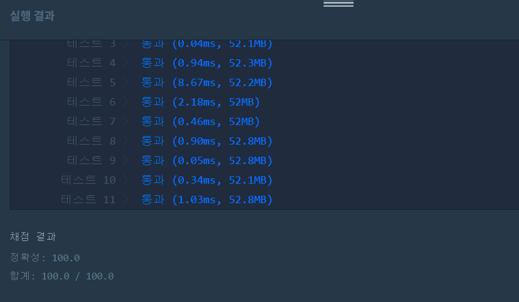

👀 문제
https://programmers.co.kr/learn/courses/30/lessons/17679
👊 도전
1. 설계
- (i, j)에서 오른쪽, 아래, 오른쪽 대각선 밑이 같은 알파벳인지 체크한다.
- 4개가 모두 같다면 visit를 true로 바꾼다.
- visit 배열을 열 방향으로 탐색하면서 true인 곳을 answer++한다.
- true인 곳을 위의 값으로 대체한다. 대체값은 ‘0’으로 바꾼다.
2. 구현
1
2
3
4
5
6
7
8
9
10
11
12
13
14
15
16
17
18
19
20
21
22
23
24
25
26
27
28
29
30
31
32
33
34
35
36
37
38
39
40
41
42
43
44
45
46
47
48
49
50
51
52
53
54
55
56
57
58
59
import java.util.*;
/**
*
* @author HEESOO
*
*/
class Solution {
char[][] map;
boolean[][] visit;
int answer;
public int solution(int m, int n, String[] board) {
// 초기화
answer=0;
map=new char[m][n];
visit=new boolean[m][n];
for(int i=0;i<m;i++)
map[i]=board[i].toCharArray();
// 맵이 더 이상 변경 없을 때까지 반복
while(checkMap(m, n)){ // 4개 블록이 있는지 체크
dropMap(m, n); // 있다면 그 부분 지우고 블록 drop
}
return answer;
}
public boolean checkMap(int m, int n){
boolean flag=false; // 맵의 변경가능 유무 체크
for(int i=0;i<m-1;i++){
for(int j=0;j<n-1;j++){
if(map[i][j]=='0') continue; // 빈 블록
char val=map[i][j]; // 비교 대상
// 오른쪽, 아래, 대각선이 모두 val과 같다면
if(map[i][j+1]==val && map[i+1][j]==val && map[i+1][j+1]==val){
flag=true; // 맵 변경가능
// 없앨 위치를 모두 true로 변경
visit[i][j]=visit[i][j+1]=visit[i+1][j]=visit[i+1][j+1]=true;
}
}
}
return flag;
}
public void dropMap(int m, int n){
for(int j=0;j<n;j++){ // 열 기준
for(int i=0;i<m;i++){ // 위에서 아래로
if(visit[i][j]){ // 없애야하는 블록
visit[i][j]=false; // 체크했으니까 다시 초기화
answer++; // 없애는 블록 카운트
// drop
for(int k=i;k>0;k--){
map[k][j]=map[k-1][j]; // 내 위치(빈 블록)은 바로 위에 값으로 대체
map[k-1][j]='0'; // 새로 채워지는 블록은 '0'으로 표시
}
}
}
}
}
}
3. 결과

🤟 성공 🤟
DFS로 구현해야하나 했는데 아니었음
4. 설명
- map에서 2x2가 있는지 찾는다
- checkMap()
- flag를 통해 맵이 변경될 수 있는지 체크한다. false라면 더 이상 맵의 변경은 없으므로 while문을 탈출하고 answer을 리턴한다.
- 이중for문으로 배열을 탐색한다.
- 맵이 변경을 반복하면 맵에는 빈 블록이 있을 수 있다. 이를 ‘0’으로 표현한다. map[i][j]==’0’이면 빈 블록이므로 continue를 통해 패스한다.
- val에 (i, j)의 값을 저장한다. (i, j)를 기준으로 오른쪽, 아래, 대각선 밑이 같은 값(val)을 가지는지 체크한다.
- 다 같은 값이라면 2x2를 만족하므로 flag=true로 바꾼다.
- visit배열에 4개의 위치를 true로 바꾸어서 그 위치 값들은 없애야 함을 표시한다.
- 2x2를 없애고 map을 재배열한다
- dropMap()
- 이번에는 map 탐색을 열 기준으로 위에서 아래로 훑는다.
- visit[i][j]가 true라면 map[i][j]를 바로 위의 값 map(i-1, j)로 바꿔야 한다는 뜻이다.
- 일단 (i, j)를 처리할 것이니까 visit[i][j]=false로 바꾸어서 다음에 checkMap()을 호출했을 때 문제가 되지 않도록 초기화한다.
- 또한, 없애야하는 블록이므로 answer++하여 그 개수를 센다.
- for문 인덱스 k를 이용해 블록을 하나씩 떨어트린다.
- k=i부터 시작하여 1까지 간다. (k, j)를 (k-1, j)로 바꿔서 위에 값을 끌어온다(drop).
- (k-1, j)는 ‘0’으로 바꾼다. drop하면서 맨 위에 블록은 빈 블록으로 채우기 때문이다. (k-1, j)가 꼭대기가 아닌 중간값이라도 상관없다. 다음 for문에서 다시 위에 값으로 덮어 씌우기 때문이다.
- 최종적으로 drop이 수행되고, 맨 위에는 ‘0’ 빈 블록으로 채워지게 된다.